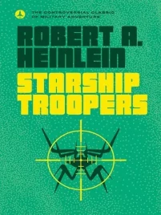

Starship Troopers

by Robert Heinlein, 1959.
My first time reading this classic old Hugo winner. I'd seen the 1995 movie many years ago, which is clearly a satire, highlighting the fascistic tendencies of the dedicated military discipline required for humanity to survive in a dog-eat-dog galaxy.
But was that Heinlein's original intent? I don't detect that in my reading of it. The text seems, to my eyes, to be a straight-up endorsement and glorification of military discipline, corporal and capital punishment, and withholding citizenship from people who haven't served in the military.
I've seen people argue that, as an expert writer, Heinlein knew precisely what he was doing, and didn't need to draw attention to his critiques of fascism in order for an astute reader to realize that not everything espoused by the novel is necessarily good, or corresponds with the author's viewpoint. We are still discussing the novel 60 years later, and its relationship to fascism, so he has achieved his goal of getting us to think about it. After all, didn't Heinlein write this partway through his drafting of what would become Stranger in a Strange Land, which features hippy sexual freedom, and Troopers itself contains nods to racial and gender equality (albeit these are somewhat ham-fisted.) Hence, say some, Heinlein was would not genuinely have intended to advocate militaristic or fascist views.
I'm not convinced. It seems entirely possible that Heinlein was in favor of sexual freedoms, while in other regards advocating staunch militarism. He wrote Troopers directly in response to the US suspending nuclear weapons testing, which he wished to see resume. According to Wikipedia he stated at the time that he used the novel to clarify his military and political views, such as that the USA was too conciliatory in its dealings with China and the Soviet Union. In the book, the "bugs" - alien enemies, are explicitly referred to as communist, and depicted as mostly mindless drones, for which the only solution is eradication.
So. I don't agree with the author's outlook, and wasn't convinced by the book's interpretation of civics, and passages of moralizing. But it was an interesting, albeit naturally dated, read, to see what successful military SF looked like 60 years ago.